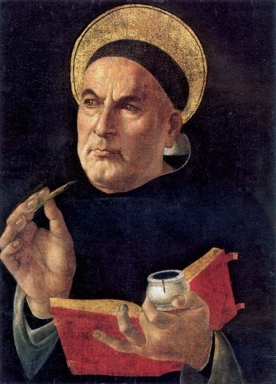

Letter Ascribed to Thomas Aquinas
To Brother John on How to Study

Since you asked me, my dearest in Christ Brother John, how you should study in order to acquire the treasure of knowledge, I offer you this advice on the matter: Do not wish to jump immediately from the streams to the sea, because one has to go through easier things to the more difficult.
Therefore the following points are my warning and your instruction:
- I command you to be slow to speak, and slow to go to the conversation room.
- Embrace purity of conscience.
- Do not give up spending time in prayer.
- Love spending much time in your cell, if you want to be led into the wine cellar.
- Show yourself amiable to all.
- Do not query at all what others are doing.
- Do not be very familiar with anyone, because familiarity breeds contempt, and provides matter for distracting you from study.
- Do not get involved at all in the discussions and affairs of lay people.
- Avoid conversations about all any and every matter.
- Do not fail to imitate the example of good and holy men.
- Do not consider who the person is you are listening to, but whatever good he says commit to memory.
- Whatever you are doing and hearing try to understand. Resolve doubts, and put whatever you can in the storeroom of your mind, like someone wanting to fill a container.
- Do not spend time on things beyond your grasp.
Following such a path, you will bring forth flowers and produce useful fruit for the vinyard of the Lord of Power and Might, as long as you live. If you follow this, you can reach what you desire.